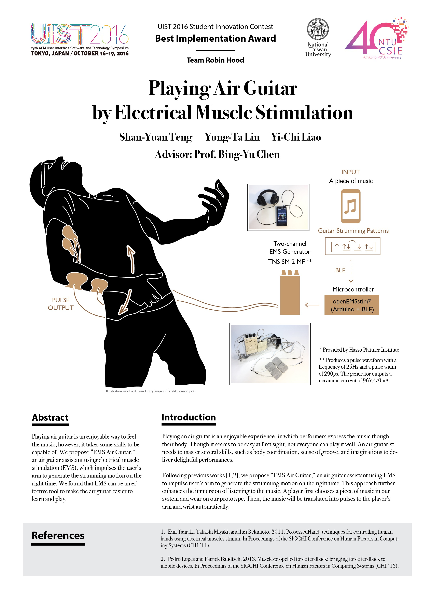

Lynda Lin (Lin Yung-Ta)
EMS Air Guitar
EMS Air Guitar
Playing Air Guitar by Electrical Muscle Stimulation
Shan-Yuan Teng, Yung-Ta Lin, Yi-Chi Liao. 2017.
Best Implementation Award. Student Innovation Contest
UIST 2016. Tokyo, Japan.
Playing air guitar is an enjoyable way to feel the music;however, it takes some skills to be capable of. We propose “EMS Air Guitar,” an air guitar assistant using electrical muscle stimulation (EMS), which impulses the user’s arm to generate the strumming motion on the right time. We found that EMS can be an effective tool to make the air guitar easier to learn and to play.
Concept Video
Demo Video at National Center of Sciences Building, Tokyo.

Poster